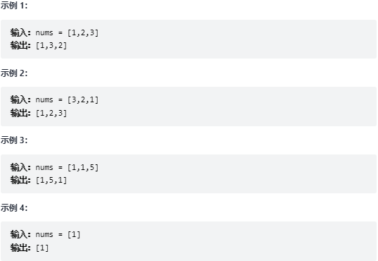
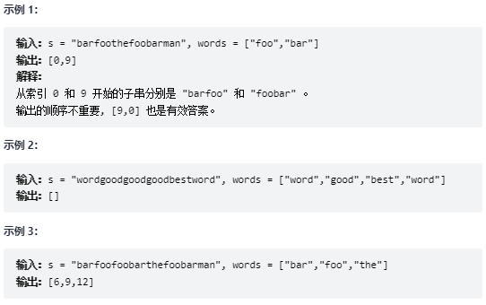
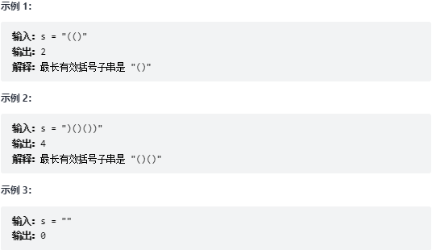

算法
下一个排列
题目实现获取 下一个排列 的函数，算法需要将给定数字序列重新排列成字典序中下一个更大的排列（即，组合出下一个更大的整数）。如果不存在下一个更大的排列，则将数字重新排列成最小的排列（即升序排列）。必须 原地 修改，只允许使用额外常数空间。
解释1.2.3.4.5.6.7.8.9.10.11.12.13.14.15.16.17.18.19.20.21.22.23.24.25.26.function nextPermutation(nums){//首先反着找出高位的数字比低位的数字小的下标,用index存储let index = -1,len = nums.length;for(let i = len - 1;i > 0;i--){//注解①if(nums[i] > nums[i - 1]){index = i - 1;break;http://192.168.0.84:8096/upload/upload_68a2e4eaa0ea0e9d3800380fc70e5e6b.png}}//注解②if(index === -1) return nums.sort((a,b) => a - b);//注解③for(let i = len - 1;i > index;i--){if(nums[i] > nums[index]){[nums[i],nums[index]] = [nums[index],nums[i]];break;}}//注解④let left = index + 1,right = len - 1;while(left < right){[nums[left++],nums[right--]] = [nums[right],nums[left]];}return nums;}
1.2.3.4.5.6.7.8.9.10.11.12.13.14.15.16.17.18.19.20.21.22.23.24.25.26.27.28.29.30.31.32.33.34.35.36.37.38.39.40.41.42.43.44.45.46.47.48.49.50.51.52.53.54.55.56.57.58.59.60.61.62.63.64.65.66.67.//注解①"关于这个if条件解释""假设存在一个i符合条件""那为什么是i对应的值大于i-1就可以了呢，为什么不能是i - 2 i - 3等等呢""为什么是一定是它们相比呢""就是再想一个问题,在不添加新的长度前提下如何通过移动位置把这个数字变大""那当然是将高位的数字调高""那又怎么调呢，调哪个""那当然就是低位的大小调无可调了,逐级向上,数字都是按照下标变大,值越小,这就是调不了""所以需要找出打破规则的那个数字，把低位值比它的值大换上去""所以为什么是i和i - 1比较""因为这个是一路比较过来的,三个数比较,数1比数2小,数2比数3小,那数1也是比数3小的""假设数组的长度为len""len-1下标的值比len-2下标对应的值小""len-2下标对应的值比len-3对应的值小""len-3的值是大于len-1的值的""len-4的值小于len-3的值""所以修改len-4对应的值就好了""因为你可能通过调整len-3到len-1下标的值能够组合出大于原来的数""这个循环走的就是这样的套路"//注解②"这个if说明整个数组都是降序的,此时的排列是最大的值""我们就把它按照升序返回即可"//注解③"可以肯定的是在这个数组中从i下标到length - 1下标对应的值是降序的""i下标对应的值是最大的,length - 1下标对应的值是最小的,那i - 1下标对应的值呢""i - 1对应的值是不是最小的我们是不清楚的""因为你不能说一个数小于这个数组中的最大值,你就说这个这个数就是数组中最小的值吧""我们应该要把i - 1对应的值插入数组中且数组还是降序""假设插入后这个值对应的下标为j,那我们就是找j - 1下标对应的值和这个值交换位置""其实就是和最小的值比较,再和第二小的值比,以此类推,一定是能找到这个值的""因为这个是经历过注解①if过来的,不然达不到这儿来,最大的那个值一定是大于它的"//注解④"这个就是把高位数字换完的操作""高位数字换完以后，不管后面的数字怎么变化都是比以前的数字大的""所以如何才是这些数组组合最小的呢,升序就好，随着下标不断变大,值也是不断变大的"//例子说明nums = [1,2,4,3,1]"首先找出高位较小的"i = 4;"所对应的值nums[i] = 1;nums[i-1] = 3""nums[i] > nums[i-1]不成立"i--;i = 3;nums[i] = 3;nums[i-1] = 4;nums[i] > nums[i-1]不成立i--;i = 2;nums[i] = 4;nums[i-1] =2;nums[i] > nums[i-1]不成立"那i下标后面的值是[4,3,1],nums[i - 1] = 2""首先它们是降序的""其次nums[i]并不是这个数组中最小的""这个时候[4,3,1]排列已经是最大的了,所以我们就再比i - 1位置升上去""我们是找比原来的数大但是是在比它大的数组中是最小的""所以2是需要和[4,3,1]中紧挨着比2大的,那就是3了""所以2和3换,现在数组是[1,3,4,2,1]""i - 1下标对应的3后面这个数组[4,2,1]无论如何排列都是要比原来组成的数字要大的""因为高位的3都比2大了，后面的我们也就不看了""而我们就是要找出[4,2,1]中排列最小的值,因为高位的1和3是定的,动态的只有后面这几个数""当然就是大值在低位,小值在高位排列组成的数才是最小的""这就是升序""而[4,2,1]这个数组本身就是降序的,所以反转就好了""如何反转,就以2为中间线,交换位置即可"
串联所有单词的字串
题目给定一个字符串 s 和一些 长度相同 的单词 words 。找出 s 中恰好可以由 words 中所有单词串联形成的子串的起始位置。注意子串要与 words 中的单词完全匹配，中间不能有其他字符 ，但不需要考虑 words 中单词串联的顺序。
解释1.2.3.4.5.6.7.8.9.10.11.12.13.14.15.16.17.18.19.20.21.22.23.24.25.26.27.28.29.30.31.32.33.function findSubstring(s,words){let right = 0,left = 0;//用于移动位置复制字符串let wordNums = words.length,wordLen = words[0].length,wLen = wordNums * wordLen,sLen = s.length,wordMap = new Map();let res = [];for(let word of words){let count = wordMap.has(word) ? wordMap.get(word) : 0;wordMap.set(word,count + 1);}while(right < sLen){right++;if(right - left === wLen){if(match(s.substring(left,right),wordNums,wordMap,wordLen)){res.push(left);}left++;}}return res;}function match(s,wordNums,wordMap,wordLen){let map = new Map();for(let i = 0;i < wordNums;i++){let str = s.substring(i * wordLen,(i + 1) * wordLen);let count = map.has(str) ? map.get(str) : 0;map.set(str,count + 1);}for(let [key,value] of wordMap){if(!map.has(key) || map.get(key) !== value){return false;}}return true;}
1.2.3.4.5.6."整体思路就是定义一个map,遍历所有的words,记录words中value的数量""第二步就是遍历字符串获取每一个长度为words所有值拼接的长度""第三步遍历获取到的这个字符串,每次取words里面value的长度,再把它们的数量一个一个装在一个Map对象中""第四步对比新旧Map""如果老的map对象中含有而新的map对象中不含有的或者它们含有的数量不一样就说明不是我们要找的字符串""如果是相等的我们只需要把该字符串的第一个字符在整个字符串中的位置装到结果数组中返回即可"
最长有效括号
题目给你一个只包含 '(' 和 ')' 的字符串，找出最长有效（格式正确且连续）括号子串的长度。
解释1.2.3.4.5.6.7.8.9.10.11.12.13.14.15.16.17.18.19.20.21.22.23.24.25.26.27.28.29.30.31.32.33.34.35.36.37.function longestValidParentheses(s){let maxLen = 0,left = 0,right = 0;for(let i = 0;i < s.length;i++){if(s.charAt(i) === "("){left++;}else if(s.charAt(i) === ")"){right++;}if(right === left){//左括号和右括号数量相同if(maxLen < 2 * left){maxLen = 2 * left;}}else if(right > left){//当右括号大于左括号的时候就不成立了,right和left都得清空right = 0,left = 0;}}//这是从左边遍历的,当一直左括号数量大于右括号数量,中间还是含有成立的,所以需要从少的那边取再遍历一次for(let i = s.length - 1;i >= 0;i--){if(s.charAt(i) === "("){left++;}else if(s.charAt(i) === ")"){right++;}if(right === left){//左括号和右括号数量相同if(maxLen < 2 * left){maxLen = 2 * left;}}else if(right < left){//当右括号大于左括号的时候就不成立了,right和left都得清空right = 0,left = 0;}}return maxLen;}
1.2.3.4.5.6.7."这个算法的整体解题思路其实就是记录两边括号出现的次数""如果出现两边括号相等的时候就是符合条件的字符串,记录它的长度""如果出现正方的括号数都小于反方的括号数时这个时候已经是不符合条件了,所以得从来再来数,清空括号数""关于为什么要遍历两次,是因为当正方数量一直大于反方数量的时候，循环还在走,直到结束,但是条件也没有成立，最后就找不到符合条件的字符串""比如((()""这个案例是有成立的字符串的,但是如果是往数量多的括号方向遍历是找不到符合条件的字符串的""所以得反着再来一遍就能找出来了"
搜索旋转排序数组
题目整数数组 nums 按升序排列，数组中的值 互不相同 。在传递给函数之前，nums 在预先未知的某个下标 k（0 <= k < nums.length）上进行了 旋转，使数组变为 [nums[k], nums[k+1], ..., nums[n-1], nums[0], nums[1], ..., nums[k-1]]（下标 从 0 开始 计数）。例如， [0,1,2,4,5,6,7] 在下标 3 处经旋转后可能变为 [4,5,6,7,0,1,2] 。给你 旋转后 的数组 nums 和一个整数 target ，如果 nums 中存在这个目标值 target ，则返回它的下标，否则返回 -1
1.2.3.4.5.6.7.8.9.10.11.12.13.function search(nums,target){let len = nums.length,l = 0, r = len - 1;if(nums.length === 0)return -1;if(nums.length === 1 && nums[0] === target) return 0;while(l <= r){let mid = Math.floor((r + l) / 2);if(nums[l] <= target){}else{}}}